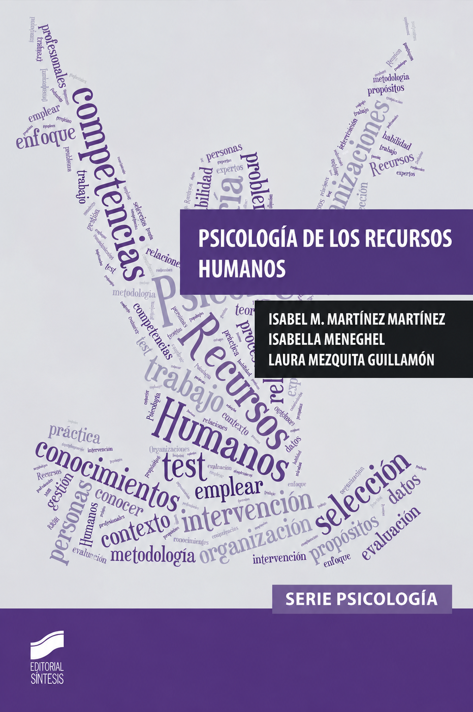
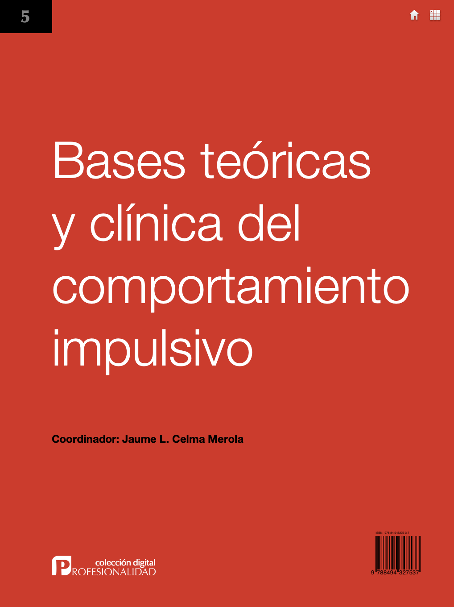
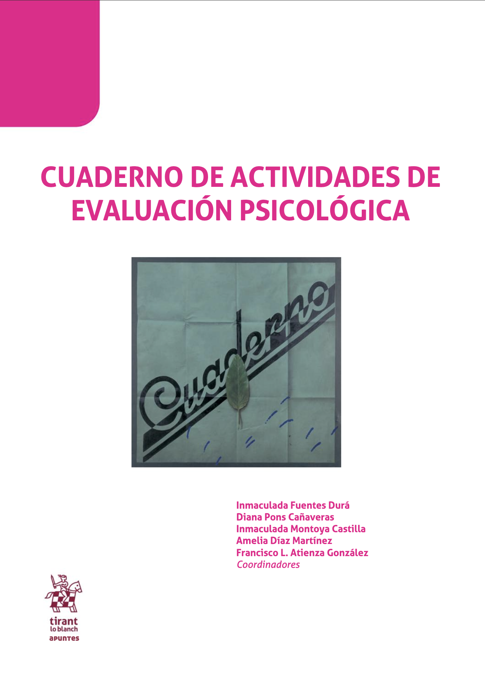
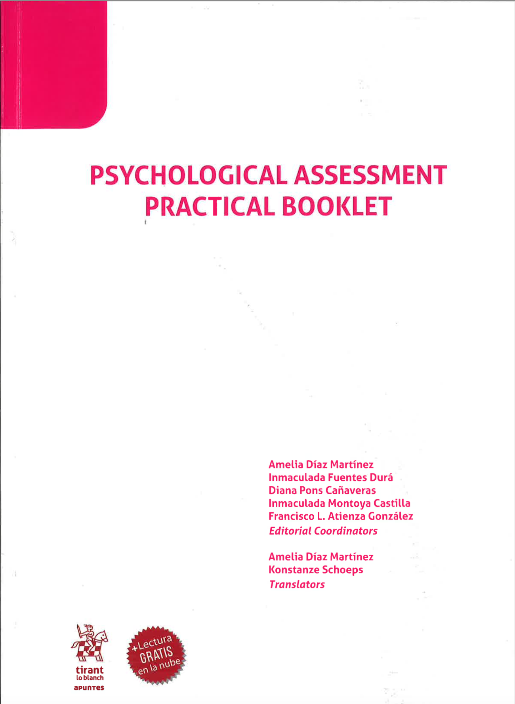

Producción editorial docenteDesplaza y clica para ver detalle

Psicología de los recursos humanosPublicación / editorialLow Cost Books

Integración de la impulsividad en los modelos comprehensivos de personalidadPublicación / editorialBases Teóricas y clínicas del comportamiento impulsivo · Ediciones San Juan de Dios

Psicología clínica y de la saludPublicación / editorialCuaderno de Actividades de Evaluación Psicológica · Tirant Lo Blanch

Clinical and health psychology assessmentPublicación / editorialPsychological Assessment Practical Booklet · Tirant Lo Blanch
Difusión de la innovación docente
Comunicación / publicada en actasComunicaciónConferencia invitada
2011
Evaluación continua mediante la utilización de un sistema electrónico de respuestaIII Jornada nacional sobre estudios universitarios · Castellón
2011
Continuous assessment with the use of an electronic response system3rd Annual International Conference on Education and New Learning Technologies · Barcelona
2013
Evaluación continua en la asignatura de Teorías de la PersonalidadIV Jornada nacional sobre estudios universitarios · Castellón
2014
Teoría motivacional de Gray y su relación con las conductas de saludProcesos Psicológicos Básicos I · Universitat de Lleida · Lleida
2018
Proyecto colaborativo con la aplicación Socrative TeacherI Escuela de Primavera de la Sociedad Española para el Avance de la Evaluación Psicológica · Málaga
2019
Juegos de mesa y evaluación de la inteligencia: Una experiencia didáctica de aprendizaje basado en juegosII Escuela de Primavera de la Sociedad Española para el Avance de la Evaluación Psicológica · Barcelona
2020
Relation of gamification with the final year score14th International Technology, Education and Development Conference · Valencia
2022
Teaching innovation in the Personality Psychology course: the Mentimer toolATIDES2022: Avances en tecnologías, innovación y desafíos de la educación superior · Castellón
2022
Online teaching during the pandemic: Teaching practices of “personality, assessment and treatment during childhood” through different activities embedded in the virtual classroom16th International Technology, Education and Development Conference · Virtual
2026
Simulating the child psychological assessment process through interactive infographics: Design and evaluation of a pilot educational innovation19th International Conference of Education, Research and Innovation · Sevilla